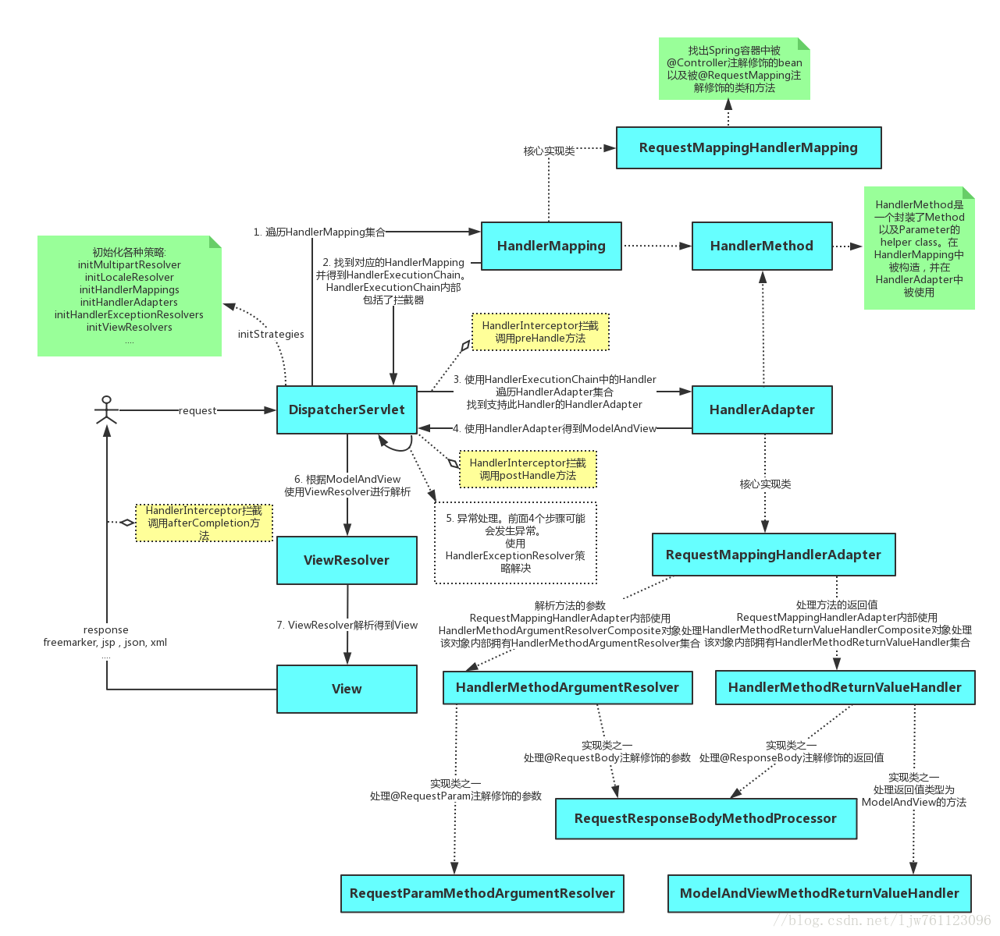

1.MyBatis：
首先看MyBatis执行流程：
2.Spring:
1.工厂模式：
Spring使用工厂模式可以通过 BeanFactory 或 ApplicationContext 创建 bean 对象。
BeanFactory ：延迟注入(getBean的时候才会注入),相比于BeanFactory来说会占用更
少的内存，程序启动速度更快。
ApplicationContext ：容器启动的时候，不管你用没用到，一次性创建所有 bean 。
2.单例模式：
Spring 中 bean 的默认作用域就是 singleton(单例)的。 注解：@Scope(value = "singleton")
3.代理模式：
AOP中：JDK,CGLIB两种动态代理，4.模板模式：
jdbcTemplate、hibernateTemplate 等以 Template 结尾的对数据库操作的类AdvisorAdapter，Spring预定义的通知要通过对应的适配器，适配成 MethodInterceptor接口(方法拦截器)类型的对象。 spring MVC DispatcherServlet 根据请求信息调用 HandlerMapping，解析请求对应的 Handler。解析到对应的 Handler（也就是我们平常说的 Controller 控制器）后，开始由HandlerAdapter 适配器处理。HandlerAdapter 作为期望接口，具体的适配器实现类用于对目标类进行适配，Controller 作为需要适配的类。
观察者模式：
是一种对象行为型模式。它表示的是一种对象与对象之间具有依赖关系，当一个对象发生改变的时候，这个对象所依赖的对象也会做出反应。Spring 事件驱动模型就是观察者模式很经典的一个应用。Spring 事件驱动模型非常有用，在很多场景都可以解耦我们的代码。比如我们每次添加商品的时候都需要重新更新商品索引，这个时候就可以利用观察者模式来解决这个问题。
Spring事件流程：
定义一个事件: 实现一个继承自 ApplicationEvent，并且写相应的构造函数；
定义一个事件监听者：实现 ApplicationListener 接口，重写 onApplicationEvent() 方法；
使用事件发布者发布消息: 可以通过 ApplicationEventPublisher 的 publishEvent() 方法发布消息。
Spring AOP 和 AspectJ AOP 有什么区别?
Sprin.g AOP 属于运行时增强，而 AspectJ 是编译时增强。 Spring AOP 基于代理(Proxying)，而 AspectJ 基于字节码操作(Bytecode Manipulation)。
Spring AOP 已经集成了 AspectJ ，AspectJ 应该算的上是 Java 生态系统中最完整的 AOP 框架了。AspectJ 相比于 Spring AOP 功能更加强大，但是 Spring AOP 相对来说更简单，如果我们的切面比较少，那么两者性能差异不大。但是，当切面太多的话，最好选择 AspectJ ，它比Spring AOP 快很多。
3.SpringMVC:
*责任链模式： DispatcherServlet这个核心类中使用到了HandlerExecutionChain这个类，他就是责任链模式实行的具体类。
组合模式：
DelegatingWebMvcConfiguration类
*适配器模式：
HandlerAdapter接口
策略模式：
DispatchServlet中的初始化组件中，用到了getDefaultStrategies方法，来决定不同组件的默认类型以实现组件的初始化操作。
建造者模式：
springMVC在构建UriComponents的内容时，就用到了建造者模式
